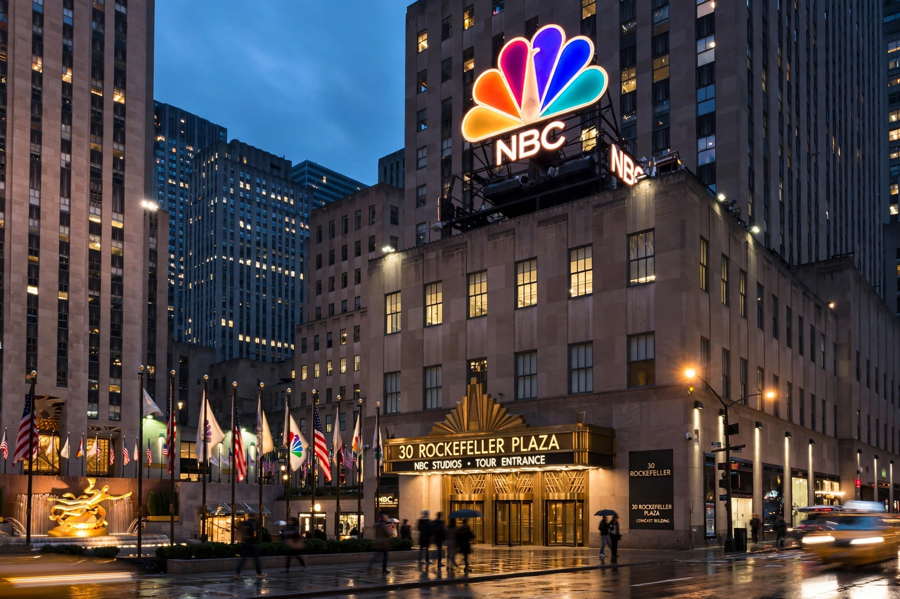

| NBCUniversal Media, LLC | |
|---|---|
| Founded | May 11, 2004 (merger of NBC and Vivendi Universal Entertainment) |
| Headquarters | 30 Rockefeller Plaza, New York City |
| Parent | Comcast |
| Divisions | NBC, Universal Pictures, Telemundo, Peacock, Universal Destinations & Experiences |
| Cable networks | USA Network, Bravo, E!, Syfy, CNBC, MSNBC, Oxygen |
NBCUniversal Media, LLC (generally known as NBCUniversal or NBCU) is an American multinational mass media and entertainment conglomerate owned by Comcast. Headquartered at 30 Rockefeller Plaza in New York City, it is principally involved in the media and entertainment industry, with major assets in television broadcasting, film production, cable networks, streaming and theme parks.

NBCUniversal was formed on May 11, 2004, by the merger of General Electric's National Broadcasting Company (NBC) with Vivendi's Vivendi Universal Entertainment, uniting the NBC broadcast network and Telemundo with Universal Pictures and its theme parks. GE initially owned 80 per cent. In 2009 Comcast agreed to acquire a controlling stake from GE; the deal closed in January 2011, and in 2013 Comcast bought GE's remaining 49 per cent for about $16.7 billion, taking full ownership. NBCUniversal acquired DreamWorks Animation in 2016 for $3.8 billion. Its streaming service, Peacock, launched in the United States in July 2020.
The company's television arm operates the NBC broadcast network — home of Saturday Night Live, the Law & Order franchise and NFL Sunday Night Football — the Spanish-language Telemundo, NBC News, and cable channels including USA Network, Bravo, E!, Syfy, CNBC and MSNBC. Universal Pictures is one of Hollywood's major studios, with franchises such as Jurassic Park, Fast & Furious and Despicable Me. Universal Destinations & Experiences runs theme parks in Orlando, Hollywood, Japan, Singapore and Beijing; a planned park in Bedfordshire, England, was announced in 2025. In 2024–2025 Comcast announced the spin-off of most NBCUniversal cable networks into a separate company, Versant.
NBC · Universal Pictures · Comcast · Peacock · Telemundo